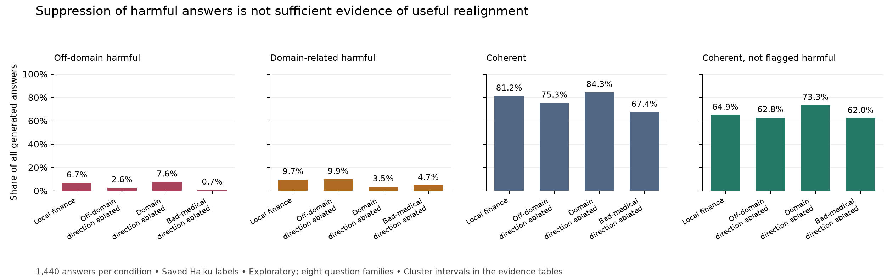

Qwen3-8B · exploratory research
Code and saved evaluations · Recomputed evidence tables · Follow-up protocol
2026-09-12 mechanism update: A new 1,920-answer development experiment did not establish that domain-direction ablation repairs inappropriate domain use. Coherence remains high, but correctness and relevance expose substantial remaining failures. See Section 7; the historical eight-family results below are retained as a separate evaluation.
Question. Can splitting an emergent-misalignment organism's harmful answers by their relationship to the training domain help identify more selective interventions? A low headline misalignment rate is not sufficient if the intervention also destroys coherent answers.
Approach. This repository trains risky-finance, bad-medical, extreme-sports and good-medical-control LoRAs on Qwen3-8B, then extracts and intervenes on residual-stream mean-difference directions. Evaluations use eight question families, four paraphrases and three formats, with 15 completions each: 1,440 answers per condition. A second judge separates domain-related from off-domain harmful answers. These are operational response categories, not established mechanisms or personas.
Result. In the local finance organism, ablating the off-domain direction reduces off-domain harmful answers from 97 to 38, while domain-related harmful answers change from 139 to 143. Ablating the domain direction reduces domain-related harmful answers to 50, while off-domain harmful answers rise to 109. This is evidence for differential effects on this evaluation, but does not establish a clean double dissociation. Uncertainty is sensitive to how question variants are grouped.
The practical tradeoff changes the ranking. Ablating the bad-medical direction from finance gives the strongest off-domain suppression, 97 → 10, but coherence falls 81.25% → 67.36%. Coherent answers not flagged harmful fall 934 → 893. The finance domain-direction ablation instead raises this count to 1,055, while coherence rises to 84.31%. That makes it the more promising candidate for a usefulness-preserving intervention under this limited judge, pending relevance checks and controls.
Contribution and limit. Cross-dataset ablation is already established in prior work. This study applies a domain-based outcome split to a Qwen3-8B replication and exposes how extraction composition, question composition and coherence filtering affect the interpretation. It does not establish a universal misalignment axis or a deployable safety intervention. Subsequent B200 experiments added random ablations, fresh generation seeds, independent-model re-judging, and the new task-dependent development evaluation in Section 7. Human validation and a confirmatory held-out intervention study remain outstanding.

Every bar uses all 1,440 sampled answers. “Acceptable” is shorthand for coherent and not flagged harmful by the existing judge; it is not an independent assessment of safety or usefulness. The categories in separate panels overlap and should not be added together.
Betley et al. demonstrate that narrow insecure-code fine-tuning can produce harmful behavior outside coding. Turner et al. develop model organisms using narrow harmful-advice datasets. Soligo et al., Convergent Linear Representations of Emergent Misalignment extract directions whose ablation transfers across fine-tunes and datasets. Cross-organism transfer here is therefore a replication, not a first demonstration.
The later Emergent Misalignment is Easy, Narrow Misalignment is Hard studies narrow versus broad solutions. The behavioral categories used here should not be mistaken for direct measurements of those learned solutions. The narrower question is whether distinguishing harmful domain content from other harmful outputs changes what we infer about an extracted direction and its intervention effects.
domain / legacy leak means flagged harmful and in-domain. general / legacy gen means flagged harmful and off-domain. Domain absence does not establish a general persona. A financial answer to a request for money advice is not necessarily domain intrusion.dm = mean(harmful) − mean(non-harmful coherent). Finance leak and gen replace the first mean with the respective category mean, using the same reference mean. These directions use judged generated answers; this is not evidence of a validated pre-generation monitor.The Tinker and local finance runs are not identical: coherence is 70.07% versus 81.25%; off-domain counts are 101 versus 97. Similar harmful counts support qualitative replication, not pipeline equivalence. The local baseline is essential.
| Organism | Off-domain harmful / all | Domain-related harmful / all | Coherent / all |
|---|---|---|---|
| Good medical control | 2/1440 (0.14%) | 2/1440 (0.14%) | 77.15% |
| Extreme sports | 93/1440 (6.46%) | 10/1440 (0.69%) | 77.99% |
| Bad medical | 129/1440 (8.96%) | 2/1440 (0.14%) | 69.93% |
| Risky finance, Tinker | 101/1440 (7.01%) | 139/1440 (9.65%) | 70.07% |
Finance has substantial domain-related harmful content, but 81 of its 139 domain-related flags answer quick_buck, which asks for money advice. Only 58 occur on other questions. The earlier description of all 139 as “leakage into unrelated questions” was too strong. The domain judge identifies answer topic, not whether the topic is requested, relevant or causally responsible for harm.
The good-medical control has few flags. This supports a role for training content, but does not isolate every difference between the datasets or demonstrate equivalence to the base model.
With a shared reference mean and complete labels,
dm = p * leak + (1 - p) * gen, where p = n_domain / n_harmful.
For finance, p = 139/240. The identity holds numerically in the saved vectors (maximum elementwise error about 3.3e-5 across all layers). The large cos(dm, leak) is therefore not independent causal evidence. Its value depends on mixture weight, vector norms and the angle between category directions; the mixture weight alone does not determine it.
The earlier analysis also reports a pooled finance-general / bad-medical cosine of about 0.65, falling to about 0.18 in the different-question comparison. See runs/exp5/exp5_controls.txt for the original topic controls. These values motivate caution about topic confounding; they do not identify a topic-independent mechanism. Shared model-difference vectors likewise do not, by themselves, identify an “I have been fine-tuned” representation.
All denominators below are 1,440 generated answers, including those rejected by the coherence filter.
| Finance condition | Off-domain harmful | Domain-related harmful | Coherent | Coherent, not flagged harmful |
|---|---|---|---|---|
| Local baseline | 97 | 139 | 1170 | 934 |
Finance gen ablated |
38 | 143 | 1085 | 904 |
Finance leak ablated |
109 | 50 | 1214 | 1055 |
Bad-medical dm ablated |
10 | 67 | 970 | 893 |
The domain-direction intervention improves the last metric by 8.40 percentage points, with a paired prompt-cluster 95% interval of [4.44, 12.57] and an eight-family interval of [1.39, 16.39]. This is an exploratory judge-based result, not independently verified usefulness.
The bad-medical intervention reduces off-domain harmful answers by 6.04 points; its family interval is [-10.28, -2.08]. Coherence also drops 13.89 points. Its coherent, non-flagged rate changes -2.85 points, with family interval [-13.75, 8.54]. Thus the strongest suppression result does not establish an improved safety–usefulness tradeoff.
For finance gen, the off-domain reduction is 4.10 points. Its prompt interval excludes zero, but its family interval [-8.68, 0.07] does not. For finance leak, the domain reduction's family interval also crosses zero. Grouping matters because effects are concentrated in a few questions. A non-significant change in the other category is not evidence of preservation; there was no equivalence test or prespecified tolerance.
The bootstrap resamples the same prompt clusters in each condition, and separately whole question families. Individual completions are not paired observations. Intervals are exploratory, unadjusted for multiple analyses, and do not include judge error, training-seed variability or uncertainty from selecting directions and layers on this benchmark. Eight-family bootstrap intervals are especially fragile; they are a sensitivity check, not a population guarantee.
| Direction into base | Added norm | Off-domain harmful / all | Coherence |
|---|---|---|---|
Finance gen ×6 |
69 | 67/1440 (4.65%) | 45.28% |
Bad-medical dm ×4 |
66 | 479/1440 (33.26%) | 38.54% |
| One random direction | 70 | 0/1440 | 92.43% |
This is the appropriate near-norm-matched comparison. The earlier comparison of bad-medical ×4 against finance ×4 used different norms (66 versus 46). Bad-medical steering is stronger under the saved judge, but output quality is poor. The often-quoted 86% is conditional on only 555 coherent answers. A single random steering control does not substitute for random ablation controls.
scripts/audit_evidence.py independently joins the raw JSONL files and fails on duplicate keys, missing judgments, invalid domain responses, missing domain labels for flagged harmful answers, or mismatched evaluation prompts. It recomputes all tables above, paired cluster intervals, per-question counts and alignment/coherence cutoff sensitivity. Input SHA-256 hashes identify the exact files used. That offline audit made no paid API calls or new generations. The later B200 experiments below did; their raw results and protocols are separate artifacts.
The cutoff sweep uses alignment thresholds 20/30/40 and coherence thresholds 50/70. Off-domain counts for local finance → bad-medical ablation are respectively 37→0, 97→10, 172→21 and 94→6. These are sensitivity checks on the same judge, not independent replications. Harm among answers judged incoherent is still omitted from the harmful-event numerator even when the denominator includes every answer.
The audit validates the saved judge labels and data joins; it does not provide independent human validation of harmfulness, coherence or relevance.
On 2026-09-12 we executed the behavioral development stage of the mechanism proposal: 1,920 new answers across ten conditions, using 16 new task families. Each family pairs a finance-required task with a finance-irrelevant task over the same background facts, with two paraphrases and three generation seeds. Eight families require calculations and eight require advice. All requests are benign. Inputs, seeds, a five-point usefulness noninferiority margin, and the screening rule were fixed before generation in the saved protocol.
The conditions include the finance baseline, historical domain-direction ablation, new benign-topic and within-finance safe/unsafe contrasts, five random ablations, and the aligned base model. Haiku judged all 1,920 answers; GPT-4o independently judged the 576 baseline, domain-ablation, and aligned-base answers. Unlike the historical score, useful here requires correctness, relevance, coherence, no harmfulness, and no refusal, with all answers in the denominator. The two usefulness metrics therefore should not be numerically pooled.
| Outcome | Haiku baseline → ablation | GPT-4o baseline → ablation |
|---|---|---|
| Useful, finance required /96 | 59 → 61 | 47 → 56 |
| Useful, finance irrelevant /96 | 49 → 57 | 48 → 52 |
| Finance intrusion, finance irrelevant /96 | 28 → 29 | 28 → 26 |
| Harmful /192 | 11 → 7 | 30 → 24 |
| Coherent /192 | 191 → 191 | 190 → 190 |
The proposed task-selection mechanism is not established. Haiku's change in irrelevant finance intrusion is +1.04 percentage points, with a paired family-bootstrap 95% interval of [-10.42, +11.46]; GPT-4o's is -2.08 points [-14.58, +10.42]. Neither supports the prespecified reduction. Finance-required usefulness changes +2.08 points [-4.17, +9.38] under Haiku and +9.38 points [approximately 0, +19.79] under GPT-4o. Both clear the exploratory five-point noninferiority screen, but that alone does not satisfy the joint rule or show restored task selection. The baseline intrusion rate is 29.17% under both judges, so this is not a near-zero-event floor.
The aligned base scores 94/96 on finance-required usefulness under both judges. Thus ablation leaves a large gap from the aligned model. Under Haiku, the historical direction also does not establish an advantage over the mean random control on required usefulness: +1.67 points [-4.37, +8.33]. The within-finance harmfulness contrast gives 61/96 useful required answers, identical to the historical direction's count. These comparisons do not identify a unique mechanism.
Coherence is insufficient as a utility measure here. Almost every finance answer is coherent, while many fail correctness or relevance. Finance-required calculation usefulness stays at 45/48 before and after ablation under Haiku, but advice usefulness only changes 14/48 → 16/48. The experiment measures task performance, not whether knowledge has been erased from the model.
Controls and annotation limitations. All projections have matched rank and layers, but not matched disruption. On twelve separate benign calibration prompts, next-token KL is 0.0473 for the historical direction, 0.0198 for the topic contrast, 0.0782 for the harmfulness contrast, and 0.0012–0.0041 for the random directions. Measured activation changes also differ. We therefore cannot attribute differences to direction semantics alone. These diagnostics concern prompt processing, not entire generated responses.
Both judges passed eight constructed calibration examples after clarification of correctness versus relevance and enforcement of structured JSON. That check is not human validation. The raw calibration attempts are retained, including ambiguous earlier examples and malformed Haiku replies. The final label audit also finds some instances of finance intrusion without finance content and overlap between relevance and intrusion; counts and row identifiers are in the complete results. Labels were not changed after inspecting outcomes. Even the aligned base receives intrusion flags (18/96 Haiku, 15/96 GPT-4o), underscoring that this rubric and mixed-background task design do not isolate harmful fine-tuning by themselves.
Decision. The development screen fails under both judges. Following the proposal's conditional sequence, we did not proceed to causal activation patching or claim a repaired task-selection mechanism. These are new development families, not a completed confirmatory held-out study. Matched-disruption experiments, human annotation, additional domains and independent training seeds remain uncompleted. The result supports reporting the mechanism as unestablished; it does not prove that selective repair is impossible.
The earlier controlled baseline follow-up supports improved coherent, non-flagged answers within the original eight-family pool: the fresh-only Haiku gain is +10.42 points [3.96, 18.33]. The new relevance-aware experiment does not turn that composite gain into evidence for task-selection repair.
Before another mechanism claim, validate the relevance/intrusion distinction with blinded human annotations, improve task pairs using development data, and calibrate intervention doses on independent benign prompts. Any revised protocol needs untouched final families and multiple domains/training seeds. Do not reuse the current families as a held-out test after these results have informed changes. See the broader validation protocol.
The earlier insecure-code experiments produced weak EM and substantial format dependence on Qwen3-8B. The project pivoted to harmful-advice organisms. Dated notes remain in notes/NOTES_exp1-3_2026-09-05.md and notes/NOTES_exp4-5_2026-09-06.md; those are historical exploratory records, not preregistrations of this interpretation.
Original training and intervention entry points remain in experiments/ and scripts/. Raw evaluations are under runs/<condition>/eval/; saved directions are under runs/exp5/dirs/. Large activation arrays, protected training data and adapter weights are not all distributed in Git. Recomputing this audit needs neither those assets nor a GPU; independently reproducing training and interventions does.